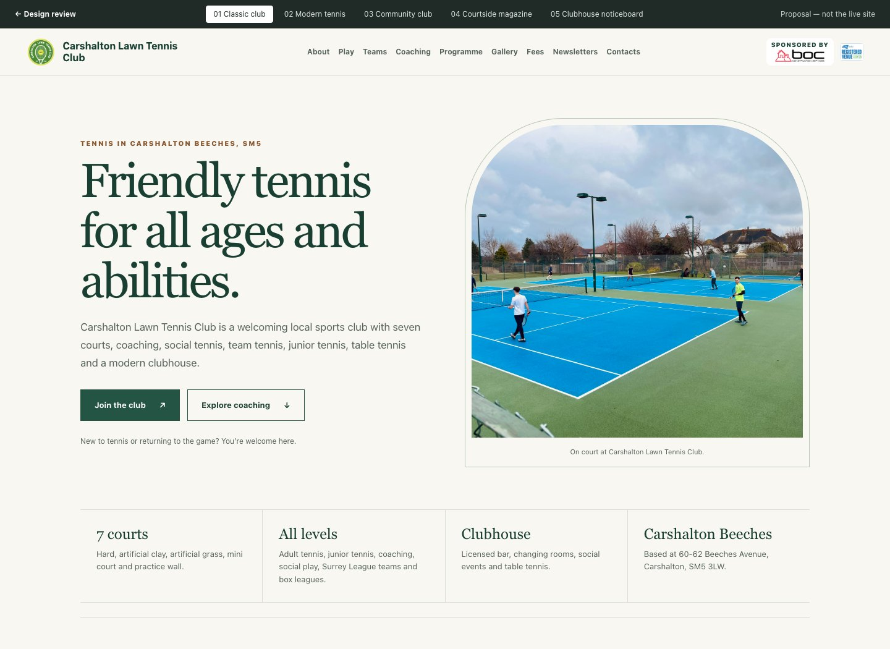

CLTC / Website design reviewOption 01 of 05

01 / Calm · established · understated
Classic club
A polished, traditional club feel without looking old-fashioned.
- The look
- Forest green and ivory, elegant serif headings, fine borders and an arched court photograph.
- The layout
- A balanced text-and-photo opening, a quiet facts strip, an editorial three-column play section and an airy gallery.
- Best if we want…
- A timeless, reassuring identity with the information and club character doing the talking.
- Trade-off
- More restrained: less immediate sporting energy than the modern option.
For discussion: Does this feel welcoming and established, or too formal? What would you keep or change?